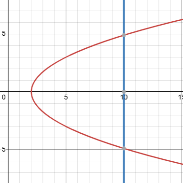
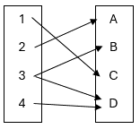
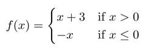
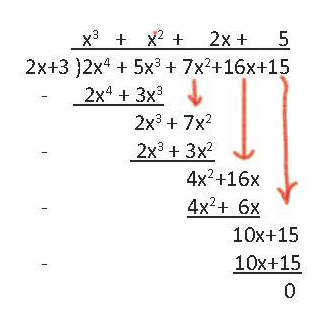
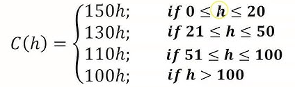

Gen Math 11 1st Semester Midterm Reviewer
Functions
Function is a relation wherein each element of the domain is related to one value in the range.
Domain is denoted as x
Range is denoted as y
Determining if an equation or graph is a function or not
- The value of domain should not be repeated.
- If a domain has no relation, it is not a function.
- A single domain can only be related to a single range.
- If an equation has y², it is not a function.
- If you draw a vertical line in a graph and there is two or more intersections, it is not a function.
- Domain or Range can be written as letters in examples.
5y = 3x² - 2x + 1 - FUNCTION
T = [(0, 2), (1, 5), (1, 6), (10, 11)] - Not function because domain "1" got repeated

Not function because vertical line intersects two points.

Not function because domain 3 has two relations
Special Symbols for Evaluating Functions
⌊x⌋ floor meaning to take the decimal number and round it down to the lower whole number
⌈x⌉ ceiling meaning to take the decimal number and round off to the higher whole number
|x| absolute value where the value is always positive
Evaluating Functions
f(x) substitute value of x
f(-2.5) = 6⌊x⌋ + 4x + 20
f(-2.5) = 6⌊-2.5⌋ + 4(-2.5) + 20
f(-2.5) = 6(-3) + 4(-2.5) + 20
f(-2.5) = -18 - 10 + 20
f(-2.5) = -8
Piecewise Function
f(3) because 3 is greater than 0 use the function corresponding to the x > 0 if statement
f(3) = 3 + 3
f(3) = 6
f(-5) because 5 is less than 0, use the function corresponding to the x ≤ 0
f(-5) = -(-5)
f(-5) = 5
Performing Operations on Functions
Addition
Add like terms
2x + 4 + 6x + 13
8x + 17
Subtraction
Distribute the negative sign then combine like terms
[2x² + 6x + 6] - [x² + 4x + 1]
2x² + 6x + 6 - x² - 4x - 1
x² + 2x - 5
Multiplication
Distribute the multiplier
When multiplying with exponents, the exponent is added during distribution
(2x²)(x - 9)
2x³ - 18x²
Given: h(x) = 2x² f(x) = x - 1
h(f(x))
2(x - 1)²
2(x² - 2x + 1)
2x² - 4x + 2
Division
Dividing 2 monomials
When dividing with exponents, the exponent is subtracted during division
4x³2x² = 2x
Synthetic Division
Remainder or r is added at the end and is written as rdivisor or denominator
y = 2x² - 5x + 14x - 3
32 -5 14
6 3
2 1 17
2x + 1 + 17x - 3
Long Division
Word Problems Involving Functions
The cost of hiring a catering service to serve food for a party is 150php per head for 20 persons or less, 130php per head for 21-50 persons, 110php per head for 51-100 persons, 100php per head for more than 100 persons. Create a piecewise function.
Functions With Inequalities
Interval notaion
Brackets mean it included the number, parentheses mean it doesn't include the number. In other words, brackets for ≥ or ≤ and parentheses for < > and infinity.
1 ≤ x < 4
[1, 4)
Step 1
Simplify the equation to the left side
3x - 2 ≤ -1
3x - 2 + 1 ≤ 0
3x - 2 + 1(x - 2)x - 2 ≤ 0
3 + x - 2x - 2 ≤ 0
x + 1x - 2 ≤ 0
Step 2
Set the numerator and denominator equal to 0 and solve. x will be the critical values.
Numerator: x + 1 = 0 | x = -1
Denominator: x - 2 = 0 | x = 2
Step 3
Substitute critical values to the original equation.
x = -1
3-1 - 2 ≤ -1
3-3 ≤ -1
-1 ≤ -1
Correct. x = -1 is included in the solution
x = 2
32 - 2 ≤ -1
30 ≤ -1
Because denominator is equal to 0. There are no real solutions. x = 2 is not included in the solution
Step 4
Substitute test values from each interval and substitute those values into the original equation.
Interval 1: any number between -1 and 2
x = 0
30 - 2 ≤ -1
3-2 ≤ -1
-1.5 ≤ -1
Correct. Any number between -1 and 2 is included in the solution.
Interval 2: any number greater than 2
x = 3
33 - 2 ≤ -1
31 ≤ -1
3 ≤ -1
Wrong. Any number greater than 2 is not included in the solution
Interval 3: any number less than -1
x = -2
3-2 - 2 ≤ -1
3-4 ≤ -1
-0.75 ≤ -1
Wrong. Any number less than -1 is not included in the solution
Step 5
Write the numbers included in the solution in number line or interval notation (depends on instructions)
From earlier steps, the numbers included in the solution are -1 and any number between -1 and 2. Therefore,
[-1,2)
x and y Intercepts
To find the x intercept, substitute y to 0.
To find the y intercept, substitute x to 0.
x² + 4x + 5 = y
0² - 4(0) + 5 = y
y = -5
y int (0, -5)
x² + 4x + 5 = 0
(x + 4)(x + 1) = 0
x = -4 and -1
x int (-4, 0) and (-1, 0)
y = x² - 7x + 123x² - 48
y = (0)² - 7(0) + 123(0)² - 48
y = 12-48
y = -14
y int (0, -14)
0 = x² - 7x + 123x² - 48
0 = x² - 7x + 12
(x - 6)(x - 1) = 0
x = 6 and 1
x int (6, 0) and (1, 0)
Asymptotes
Vertical Asymptote (VA)
To find VA, equate the denominator to 0. If the given is not a fraction, there is no VA.
y = x² - 7x + 123x² - 48
3x² - 48 = 0
x² - 16 = 0
x² = 16
VA: x = ±4
Horizontal Asymptote (HA)
If degree of denominator is greater than numerator HA is y = 0
y = 3x + 12x² + 16
HA: y = 0
If degree of numerator and denominator is equal, divide highest degree
y = x² - 7x + 123x² - 48
y = x²3x²
HA: y = 13
If the degree of numerator is greater than denominator or if the given is not a fraction, there is no HA
Oblique Asymptote (OA)
Only if the degree of numerator is greater than denominator
To find the OA divide the fraction using synthetic or long division but do not include the remainder.
y = 2x² - 5x + 14x - 3
32 -5 14
6 3
2 1 17
OA: y = 2x + 1
Domain and Range
Domain
Vertical asymptote but ≠
y = x² - 7x + 123x² - 48
VA: x = ±4
Domain : x ∈ ℝ | x≠±4
Range
Horizontal/oblique asymptote but ≠
y = 3x + 12x² + 16
HA: y = 0
Range : x ∈ ℝ | x≠0
y = x² - 7x + 123x² - 48
HA: y = 13
Range : y ∈ ℝ | y≠13
y = 2x² - 5x + 14x - 3
OA: y = 2x + 1
Range : y ∈ ℝ | y ≠ 2x + 1